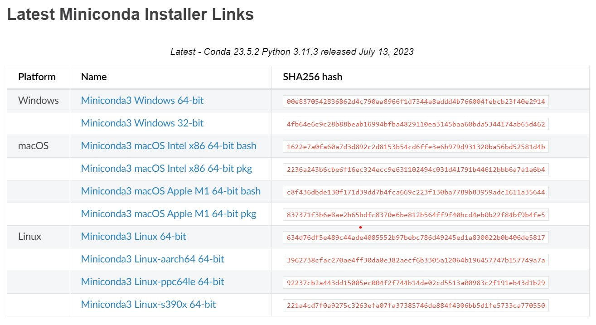

1. Python環境の設定#
Pythonのプログラミング環境を整えるのに、最も単純な方法はPythonのインタプリタを直接OSにインストールする方法になる。しかし、その他にもPythonプログラミングの環境構築にはいくつかの方法があり、一概にどれが最適とは言いづらい部分がある。
本資料では、扱いやすく、また現在最も広く使われているといういみでAnacondaあるいはMinicondaを用いる。AnacondaとMinicondaの違いについては後述する。
1.1. 仮想開発環境とパッケージ管理#
Pythonを少し使うだけなら、OSに直接インストールするのが一番環境構築が容易である。しかし、Python(に限らず他のプログラミング言語でも)には、いくつかのバージョン(例えば、Python 3.6やPython 3.10)があり、バージョンによって使えるライブラリや機能が異なることが多くある。
その際、Pythonの実行環境をOS上に直接作ってしまうと
これまでのプロジェクトはPython 3.6で開発していたのでOS上のPythonは3.6のままであったが、別のプロジェクトBで新たにPython 3.10でないと動かないライブラリを使いたい
というような状況が発生する。そんな時、Python 3.6が使える環境と、Python 3.10が使える環境を別々に用意することができれば便利だろう。
このように一つのOS上で、複数の異なるバーションのPython(や他のプログラミング言語)を備えた開発環境を管理する仕組みを仮想開発環境と呼ぶ。Python用の仮想開発環境を作るソフトウェアは複数あり、代表的な物には、
virtualenv: https://virtualenv.pypa.io/en/latest/
Anaconda (Miniconda): https://www.anaconda.com/products/distribution
Poetry: https://python-poetry.org/
等がある。余談だが、この講義資料の管理にはPoetryを利用している。
ここで注意しなければならないのは、上記の4つの中でvirtualenvは異なるバージョンのPythonを仮想的に管理する仕組みであるのに対して、Anaconda, Pipenv, Poetryは仮想開発環境の管理とは別にパッケージ管理ツールとしての側面も持っている、という点である。
Python向けのパッケージ管理ツールにはPipがあるが、上記の4つの中ではPipenvとPoetryはvirtualenvによる仮想開発環境の管理とPipによるパッケージ管理を組み合わせて利用しているソフトウェアである。
本書では、多くの研究プロジェクトで使われており、またPyTorchやTensorFlowといった機械学習ライブラリを導入しやすいという理由から Anaconda (Miniconda) を用いて仮想開発環境を構築する。
1.2. AnacondaとMiniconda#
Anacondaは、前述の通り、仮想環境とパッケージの管理を行うソフトウェアであるが、類似したソフトウェアにMinicondaがある。
AnacondaはPythonのインタプリタの他に、科学技術計算等に一般的に用いられるNumPyをはじめとする大量のライブラリを一緒にインストールしてくれるという点で、自分で必要なライブラリをチェックしなくても、大体のプロジェクトにおいて使えるという点では優れている。
その一方で、Anacondaの仮想環境を一つ用意すると、それなりにストレージ (HDDやSSDのこと)の容量を圧迫するため、自分で必要なライブラリのチェックができるようになってしまえば、Minicondaの方が使い勝手が良い。MinicondaはPythonのインタプリタさえインストールしないことも可能で、必要なライブラリと、そのライブラリが依存するライブラリだけを最小単位でインストールするため、ストレージの無駄遣いが防げる。
受講生の多くは自身のノートPCで作業をしていることを想定すると、ストレージの容量はそれほど多くないだろうから、Minicondaの方が必要なストレージ量の観点からも好ましい。
1.2.1. Minicondaの導入#
Minicondaを導入するには、まず、 https://docs.anaconda.com/free/miniconda/ にアクセスし、自分のOSにあったインストーラをダウンロードする。
インストーラの選択だが、よほど古いPCを使っていない限り、Windowsなら「Windows 64-bit」を選択すれば良い。macOSの場合は、最近のM1/M2 Macを使っている場合は「macOS Apple M1 64bit bash」を選び、そうでない場合には「macOS Intel x86 64-bit bash」。Linuxの場合には、通常のデスクトップPCであれば「Linux 64-bit」を選べば良い。
{kind=link}
Windowsの設定#
Windowsであれば、インストーラの指示に従っていくとダウンロードが完了する。途中、以下の画面になったら、二番目の「Add Miniconda3 to my PATH environment variable」という項目にチェックを入れること。この項目にチェックを入れると、コマンドプロンプトやPowerShellからcondaコマンドが使えるようになる。
{kind=link}
インストールが完了したら、コマンドプロンプトないしPowerShellを起動し、以下のコマンドを実行する。
conda init powershell
すると、condaコマンドの各シェルソフトでの利用が可能になる。時折、最初の設定時にcondaがコマンドとして認識されていない場合があるが、その場合は $HOME/miniconda3/Scritps/condaなどの絶対パスを指定して
$HOME/miniconda3/Scripts/conda init powershell
のような形で実行する。
Mac/Linuxの設定#
MacやLinuxであればBashやZsh等のシェル環境を立ち上げた後、インストールしてきた*.shに実行権限を付与して、ファイルを実行する。
# 実行権限の付与
chmod +x ~/Downloads/Miniconda3-xxxx-xxxx.sh
# インストーラの実行
~/Downloads/Miconda3-xxxx-xxxxx.sh
インストール中、いくつかの質問がなされるが、特別な設定をしたい場合を除き、初期設定のままで問題ない。インストールが完了したら、自分が使っているシェルソフトウェアに合わせて、
# Bashを使っている場合
conda init bash
# Zshを使っている場合
conda init zsh
を実行する。なお、自分が使っているシェルソフトが分からない場合には、
echo $SHELL
とすると、何を使っているかを調べることができる (特に設定を変えていなければBashのはず)。
また、時折、condaコマンドが認識されない場合があるので、その場合は絶対パスを用いて、
$HOME/miniconda3/Scripts/conda init bash
のように実行する。
シェル設定のすすめ
プログラム開発に慣れてくるとシェル環境を使うことで開発効率がアップすることが多い (格好良さそうに見えるからシェルを使っているわけではない)。
一方で、シェル環境を便利に使いこなすには、各自で設定をする必要があり、初学者にはハードルが高いのも事実である。
Windowsを使っている場合には、オープンソースのPowerShellを使うとOh My Poshというソフトを使うことで比較的簡単に設定ができるのでオススメだ。
また、MacやLinuxを使っている場合には、BashやZshに対して.bashrcや.zshrcといった設定ファイルを書くことで、より便利にシェル環境を使うことができる。
しかし、より手っ取り早く初期設定がなされたシェルを使いたいのならFishがオススメだ。Fishはインストールした段階で、コマンドの補間等の最低限の機能が揃っているため、設定の敷居が低い。こちらもOh My Fishというソフトウェアを使うことで、より細かな設定が可能だが、当分追加の設定は必要ないだろう。
1.2.2. パッケージのインストール・アンインストール#
Minicondaをインストールすると、最初からbaseという名前の仮想環境が用意されている。試しに、この環境にNumPyをインストールしてみよう。ライブラリのインストールにはconda installコマンドを用いる。
conda install numpy
すると、Minicondaがインストール済みのライブラリと、新しくインストールするライブラリの依存関係をチェックした後に、インストールをして良いかどうかを聞いてくるので「y」を入力してインストールを実行する。
インストールが完了したら
python
でPythonのインタプリタを起動して、
import numpy
としたときにエラーが起こらないことを確認する。また、現在インストールされているライブラリのリストは
conda list
とすることで確認することができる。このリストの中にNumPyが含まれていることも確認しておこう。
インストール前に、予め、インストールしたいライブラリが存在するかどうかを確認したい場合にはconda searchを使って
conda search numpy
のようにすれば良い。
また、Minicondaにはチャネルという仕組みが用意されており、公式にインストールできるライブラリの他に、有志のユーザが作成したリポジトリからライブラリをインストールすることができる。例えば機械学習ライブラリの一つであるPyTorchをインストールするためには、pytorchという名前のチャネルを指定して、
conda install -c pytorch pytorch
のようにすれば良い。
よく用いられるチャネルにはconda-forgeがあり、ここには、公式には用意されていない多くのパッケージが登録されている。単なるconda installで見つからないときには、conda-forgeから探してみると見つかることが多い。
反対に、インストール済みのパッケージをアンインストールしたい場合にはconda uninstallコマンドを用いる。試しに、今インストールしたNumPyをアンインストールしてみる。
conda uninstall numpy
アンインストールが完了すると import numpy がエラーになり、conda listで表示されるリストからNumPyが消えるので確認してみてほしい。
また、Miniconda環境では、condaコマンドを用いてライブラリをインストールする以外にも、Pipを用いてライブラリがインストールできる。ただ、この場合は、Minicondaの依存関係のチェックや、依存するライブラリのアップデート等に問題が生じることがあるので、Pipによるライブラリのインストールはcondaコマンドでインストールできるライブラリを導入し終わった後にするのが良い。
conda-forge利用時の注意
conda-forgeは大半のライブラリが見つかるという意味で大変便利なのだが、用意されているライブラリが多い分、新しいライブラリをインストールする度に依存関係の解決に要する時間が増大する。従って、特別にconda-forgeにしかないパッケージを入れる、という目的以外では、なるべくconda-forgeを使うことは避け、別途Pipなどを用いてパッケージをインストールする方が良い。
1.2.3. 仮想開発環境の作成・削除#
Minicondaで新しく仮想開発環境を構築するにはconda createコマンドを用いる。仮想環境の名前を「myenv」のようにする場合には、以下のようにコマンドを実行する。
# 仮想開発環境の構築
conda create -n myenv
このように実行した場合には、myenv環境に、base環境のPythonと同じバージョンのPythonインタプリタがインストールされる。インタプリタのバージョンを指定したい場合には
# インタプリタのバージョンを指定
conda create -n myenv python=3.9
のようにバージョンを指定することもできる。また、予めインストールするライブラリの全部または一部が決まっている場合には、
# 仮想開発環境構築時にライブラリもインストールする
conda create -n myenv python=3.9 numpy matplotlib
のように複数のライブラリを指定することもできる。
仮想開発環境を作成するとconda env listで表示されるリストに作成した仮想開発環境の名前が加わるので確認しておこう。
また、すでにある仮想環境を削除したい場合には
# 仮想開発環境の削除
conda env remove -n myenv
を実行すれば良い。
1.2.4. 仮想環境の切り替え#
一度、仮想開発環境が作成できたら、
conda activate myenv
とすることで、仮想環境が切り替わる。また、元の環境(base環境やOSに直接インストールされたPythonなど)に戻りたい場合には
conda deactivate
を実行すれば良い。
1.2.5. environment.yamlの利用#
仮想開発環境を作る際、必要なライブラリをその都度インストールすると、別のコンピュータに同じ環境を構築したいときに不便である。
その場合、Minicondaではenvironment.yamlというファイルを利用して、仮想開発環境の定義をファイルを通じて行うことができる。
一例として、
環境名: myenv
必要なパッケージ:
NumPy
Matplotlib
といった設定には、以下のようなYAMLファイルを作成すれば良い (ファイル名は必ずしもenvironment.yamlでなくとも良い)。
name: myenv
dependencies:
- numpy
- matplotlib
environment.yamlから仮想環境を作成するにはconda env create (envが入ることに注意)に、以下のようにYAMLファイルを指定すれば良い。
# 環境定義のファイルを利用した仮想開発環境の作成
conda env create -f environment.yaml
また environment.yamlに予め用意されている名前の代わりに、コマンド実行時に環境名を指定することもできる。
# environment.yaml内に列挙されたライブラリを"myenv2"という仮想開発環境にインストールする
conda env create -n myenv2 -f environment.yaml
environment.yamlを使用する際、公式のパッケージが見つからない時には、チャネルを指定することもできる。この場合には、ファイルを以下のように書き換える。
name: advml
channels:
- pytorch
dependencies:
- numpy
- matplotlib
- pytorch
加えて、Minicondaのパッケージとは別にPipを用いてパッケージをインストールすることもでき、そのためには以下のように- pipセクションを追加する。
name: advml
channels:
- pytorch
dependencies:
- numpy
- matplotlib
- pytorch
- pip
- pip:
- jupyterlab
1.3. Pythonの実行#
ここまでで、Pythonを利用する準備が整ったので、早速ターミナル環境からPythonを使ってみる。WindowsならPowerShell、MacやLinuXならターミナル等を立ち上げて、pythonとコマンドを打つ。
すると、Pythonのバージョン等の情報が表示されたあとで、Pythonインタプリタのコマンドの受け付けを表わす、
>>>
が画面に現れる。試しに、以下のコマンドを打って、簡易的な電卓として使えることを確認しよう。
# 例1: 足し算
a = 1
b = 2
print(a + b)
3
# 例2: 平方根
import math
print(math.sqrt(2.0))
1.4142135623730951
# 例3: 文字列の処理
s = "Hello, world!"
print(s.lower()) # 小文字に変更
print(s.upper()) # 大文字に変更
hello, world!
HELLO, WORLD!
# 例4: 配列の和を求める
a = [1, 2, 3, 4]
print(sum(a))
10
# 例5: 文字列のフォーマット
x = 10
print("x is %d" % (x)) # C言語風
print("x is {:d}".format(10)) # format関数を使う
print(f"x is {x:d}") # フォーマット済み文字列リテラル (Python 3.6以降)
print(f"{x = :d}") # 評価元の文字列も表示 (Python 3.8以降)
x is 10
x is 10
x is 10
x = 10
このように、Pythonのインタプリタ上では簡単な電卓のような機能を使うことができる。多少の使いづらさはあるものの、通常のプログラミング言語にあるif文やfor文なども実行できる。
コンパイラとインタプリタ
情報科学を体系的に勉強したことがあれば、それほど戸惑わないかもしれないが、ここではインタプリタとコンパイラの違いについて、簡単に紹介する。
コンパイラ (compiler)というのは人間が理解できるプログラムのソースコードを機械語に翻訳して、コンピュータ上で実行できるようにするためのソフトウェアを指す。例えばC言語であれば、GNU GCCやLLVM Clangなどのコンパイラを用いて、ソースコードを機械語に翻訳する。C言語以外にも、JavaやC#, Go, Rustなどがコンパイラを用いるプログラミング言語で、これらの言語は一度機械語に翻訳してしまえば、コンピュータが機械語の内容を読み取って次々に処理を実行していくので、一般的に言って計算速度が速い、という特徴がある。
インタプリタ (interpreter)は、プログラムのソースコードを1行ずつ読み取って、機械語に変換する。こうすることで、ソースコードを完璧に作り込んでから実行する、という使用法に加え、プログラマがコードを入力しては結果を確認するというインタラクティブな使用が可能となる。そのため、簡単なプロトタイプのプログラムを作りたい場合などには、インタプリタ言語が好まれることが多い。最近は、インタプリタ言語 (Pythonの他、RubyやJavaScript)なども、様々な工夫によって実行速度が改善してきてはいるが、それでも、コンパイラを用いる言語と比べて、一般的には実行速度は劣る。
1.4. スクリプトファイルの実行#
Pythonでは、シェル環境からインタプリタを起動して1行ずつソースコードを入力する以外にも、実行するプログラムの内容を一通り記述したスクリプトファイルからプログラムを実行することができる (むしろ、この使い方の方が一般的)。
スクリプトファイルは、通常.pyという拡張子を持つファイルとして作成する。作成したファイルをエディタで開き、プログラム内容を記述していく。今回は以下のプログラムをfib.pyというファイルに保存して、自身のコンピュータ上で実行してみよう。
def main():
# フィボナッチ数の先頭10個を表示
fib = [1, 1]
while len(fib) < 10:
a = fib[-1] + fib[-2]
fib.append(a)
print(fib)
if __name__ == "__main__":
main()
上記のスクリプトファイルにおいて __name__ == "__main__" という条件文はファイルがスクリプトファイルとして実行された時にだけTrueになるもので、これによりファイル実行時に呼び出される処理の内容を明確にすることができる。
スクリプトファイルの実行にはpythonコマンドにファイル名を引数として与えれば良い。
python fib.py
正しく実行できていれば、以下のような実行結果が得られるはずである。
[1, 1, 2, 3, 5, 8, 13, 21, 34, 55]
1.5. Jupyter Labの利用#
Jupyterとは、ウェブブラウザ上でインタラクティブにPythonを実行するための開発環境である。Jupyterには以前からあるJupyter Notebookの他に、より新しいJupyter Labがあり、後者の方が機能が充実している。
どちらも起動するには、ターミナルから起動コマンドを呼び出す。
# Jupyter Notebookの場合
jupyter notebook
# Jupyter Labの場合
jupyter lab
本資料では、利便性の関係からJupyter Labを使うことをおすすめする。Jupyter Labを立ち上げると、以下のような画面が表示される。
{kind=link}
ここで、画面左上の「＋」ボタンを押すか、既存の*.ipynbファイルを左側にあるファイルエクスプローラからダブルクリックすると、コードの入力画面に切り替わる。
{kind=link}
Jupyter環境では、標準でPythonとMarkdownが使えるほか、環境設定を行うことでR言語等も使うことができる(余談だが、JupyterとはJulia, Python, Rから来ている造語)。ここでは環境設定の方法は特に紹介しないが、興味のある読者は各自調べて見てほしい。
1.5.1. 覚えておくと便利なショートカット#
Jupyter環境では、いくつかのショートカットキーが用意されており、逐一、セルをマウス等で選択することなく編集を進めるために、これらを覚えておくと良い。なお、現在、セルにコードを入力中なのか、セルが選択されているのかでショートカットキーの挙動が異なるので注意すること。
セルを選択中
新しいセルを上に作成: 「a」 (aboveのa)
新しいセルを下に作成: 「b」 (below, bottomのb)
選択中のセルを削除: 「d」を2回 (deleteのd)
セルの入力モードに入る: 「Enter」
セルを切り取る「x」
セルを貼り付ける「v」
セルの削除などの操作を取り消す「z」 (絶対に覚える！)
セルに入力中
コードの補間: 「Tab」 (絶対に覚える！)
セルの入力モードから抜ける: 「Esc」
現在の箇所でセルを分割: 「Ctrl」+「Shift」+「-」 (推す順番も関係あり)
この他、Jupyter Lab環境では、メニューの「File」や「Edit」等を開くと、右側に各操作のショートカットキーが書かれているので、こちらを参考にすると良い。
1.6. 練習問題#
自分の計算機にインストールされているターミナル環境を使いやすいように設定してみよう。WindowsならオープンソースのPowerShell、Mac/LinuxならFishを導入して、それぞれ「Oh My Posh」や「Oh My Fish」などのサポートツールを使って設定すると良い。
Pythonはインタプリタ型のプログラミング言語であると同時に「動的型付け」を行う言語でもある。C/C++等は静的型付け言語であるが、それぞれの利点と欠点は何か。
Pythonで2の100乗などを計算すると、その値が正しく計算される。通常、コンピュータで扱える値は64bit整数 (符号付き整数なら、最大で、\(9 \times 10^{18}\)程度)しか表せないが、このような計算が可能なのは何故か。